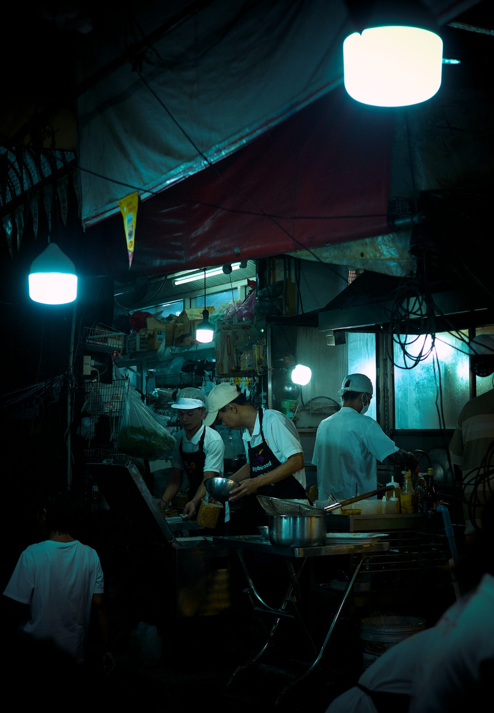

Photo Essay · Chiang Mai
Above the Haze
A quiet hour at Doi Suthep, looking down on a valley the season keeps half-hidden.
View essay →Documentary photography across Southeast Asia, Europe and beyond. Each series is a slow accumulation — returning to the same places, the same hours, until something reveals itself.
A quiet hour at Doi Suthep, looking down on a valley the season keeps half-hidden.
View essay →
After dark, Chinatown's lanes become a chain of lit rooms feeding the city until dawn.
View essay →